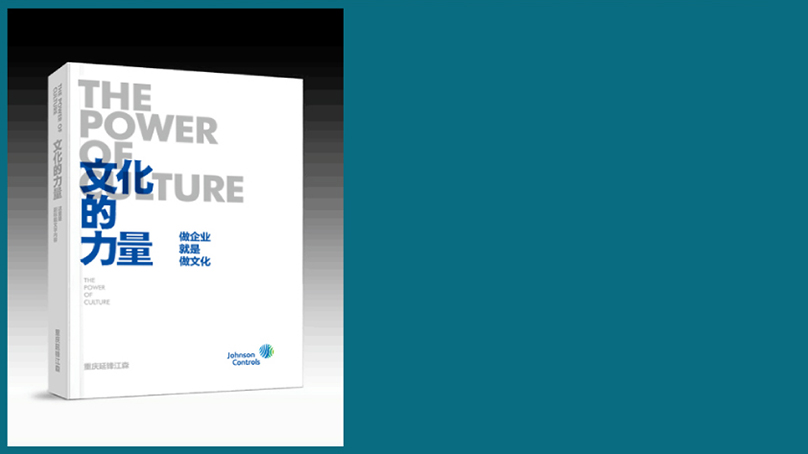

The power of culture is dedicated to our dear friends, learning and inheriting, and heading for the future.
The power of culture is dedicated to outstanding peers, sharing and moving foward.
The power of culture is dedicated to our esteemed friends, cast gravel led pearl, quote and prove fully.
The power of culture is dedicated to our next generation, to give back to society and to help the public good.
This book by Chongqing Yanfeng Adient company all colleagues with the feelings of blood is thicker than water . This is the temper of an enterprise on itself, but also a group of people who will always have blood in their bones, and the past they have witnessed , a precious memorial for growth created by themselves. The 4,000 copies of the first volume will be donated to the blue sky fund to support environmental sustainability, social services, and education!